| Fav_Goals | Dispersion |
|---|---|
| 0 | 8 |
| 1 | 35 |
| 2 | 61 |
| 3 | 10000 |
Building a model to simulate football scores from Elo ratings
football
statistics
I demonstrate how the Poisson and negative binomial distributions compare to actual football scores from the English top flight, and how we can convert Elo ratings into correct score probabilities.
I demonstrate how the Poisson and negative binomial distributions compare to actual football scores from the English top flight, and how we can convert Elo ratings into correct score probabilities.
Background
I hope you enjoyed my recent article looking at the worst league title collapses in English football history. If not, you can read it here.
Now I will go into a little more depth on the model I used to simulate scores using daily Elo ratings from Club Elo. You can find all my code and data files for this project in my GitHub repo.
Since the Elo ratings only begin in 1940, we will have to ignore results prior to World War Two. Our first task, as always, is to do some data inspection.
How Football Has Changed Since 1946
First, let’s look at the changes in goalscoring rate through the years. Now, I decided not to account for varying goal rates in this model, because it adds a fair amount of complexity and I didn’t think it would be necessary given the task at hand. Nonetheless, it is still interesting to see how the game has changed over the last 80 years, especially the huge decrease in the latter half of the 1960s:
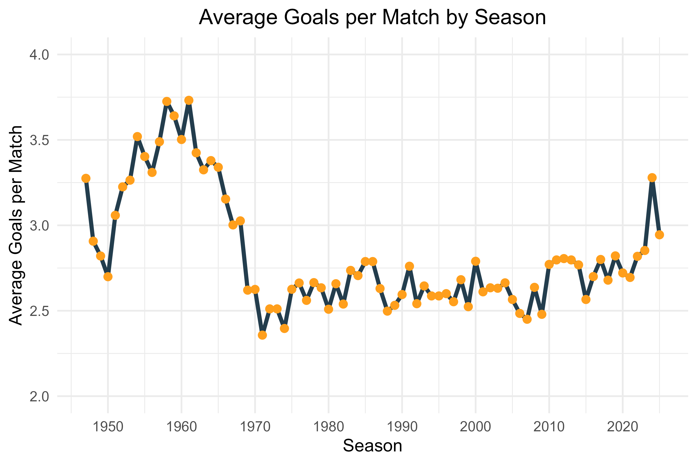
We can also take a look at how home supremacy has changed in the English top flight. This has shown a steady downward trend, presumably due to improved travel and accommodation for away sides. Not many teams took their own chef on the road in the 1950s.
And to help answer the question “how much of home advantage is due to the fans?” we can look at the 2021 COVID season, played in empty stadia, where home supremacy dropped to almost zero.
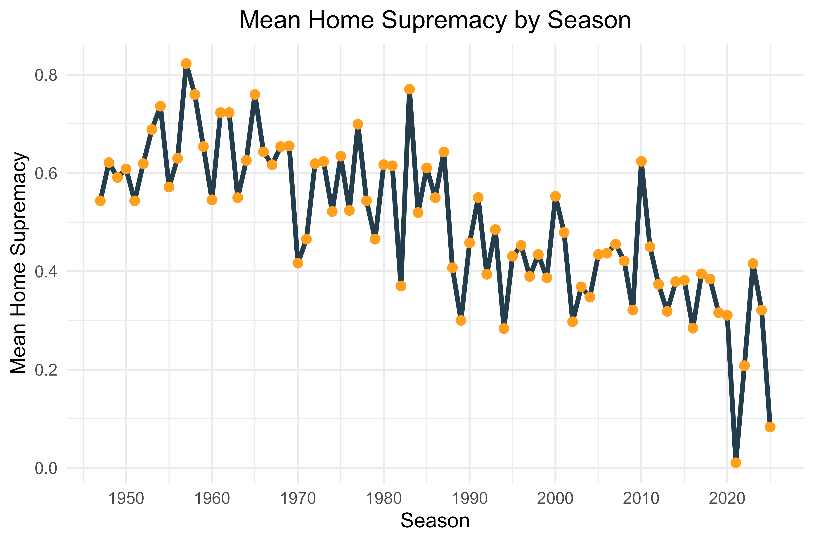
Finally, we can summarise the mean Elo rating of English top flight teams over the same time period. The overall trend is upward, and it is also notable that the standard deviation (shown by the light blue band) gets wider as time goes on. The spread of team quality in the modern Premier League, as I’m sure you are aware, is much wider than it used to be.
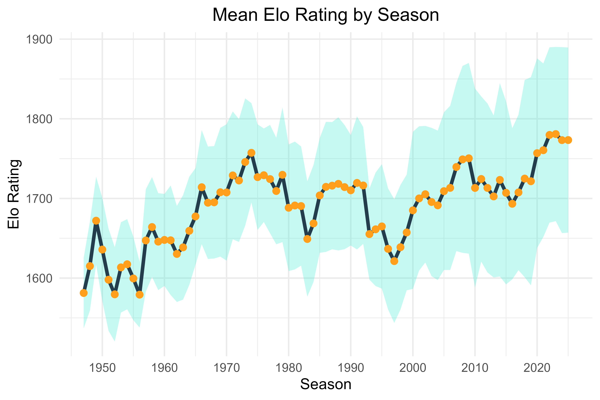
How Do Elo Ratings Work?
Now we can look at the Elo rating system itself. It was originally designed by Arpad Elo to rank chess players, but can be extended to any zero-sum game with two players or teams.
When two teams play against one another, they are effectively gambling a portion of their points, with the better team (according to their Elo ratings) putting more of their points at stake than the inferior team.
Since the winner gains the same number of points as the loser loses (the definition of ‘zero-sum’), the population of ratings sits around a consistent long-term average - typically 1500, but any arbitrary number can be chosen.
You can find a full explanation of how Club Elo calculates its ratings here. There are adjustments for margin of victory, home advantage, and what they call “tilt” (whether a team’s games are higher or lower scoring than average).
We can use Club Elo’s formula to calculate the predicted probability for each game in the data, with 0.5 awarded for a draw. Below I have plotted the deciles of teams’ predicted probability to see how they match up with actual results.
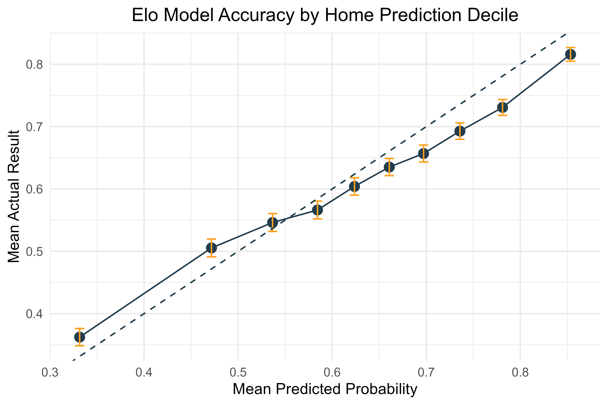
The plotted points should approximately follow the dashed line but as you can see, Elo seems to overestimate favourites’ chances and underestimate underdogs’ chances.
To reiterate, this is when allotting 0.5 points for a draw. I don’t know how it would fare when trying to predict actual win-draw-lose results instead, or if it’s possible to derive that simply from the Elo difference.
But that is our next task!
Generating Realistic Football Scores
Clearly if we are going to simulate league tables, we need actual scores rather than just results. And we certainly need some draws and not “half wins”. So how can we simulate realistic football scores?
Now let me make it clear at this point, I am not breaking any new ground here. There is a large body of work dedicated to the distribution of football scores going back as far as the 1950s. For further reading I recommend Reep, Maher, Dixon-Coles, and others.
But I find it useful and educational to try and build these things yourself step by step, so here we go. I promise to try and keep the maths (math for American readers) as light as possible.
Useful Probability Distributions
In statistics, when we have an event that will happen some random number of times during a time interval, it is common to use the Poisson distribution. Given that we know the average number of goals scored by teams in our dataset (1.42), we can simply plug that into R’s dpois function and it will give us the probability of 0 goals, 1 goal, 2 goals, and so forth.
Then we can compare these probabilities with the actual observed relative frequency of each score:
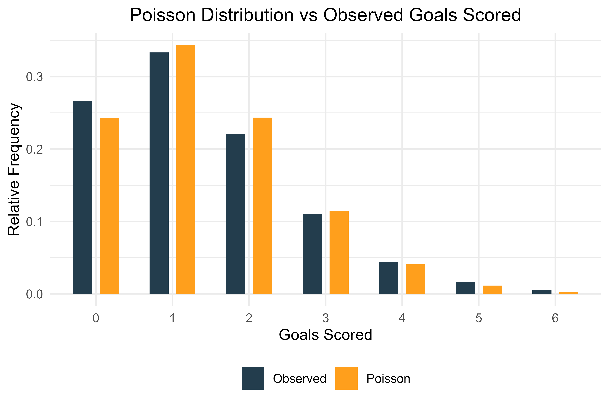
So what’s going on? Poisson is overpredicting scores of 1, 2 and 3, but underpredicting 0, 4, 5, and all higher scores up to infinity. This is a problem known as overdispersion.
The Poisson distribution relies on an assumption that the mean is equal to the variance. In reality, this assumption is often not satisfied.
Indeed, the variance of our football scores is 1.65 compared to the mean of 1.42. That’s why the actual scores are more spread out (more 0s, more 5s and 6s) compared to the Poisson predictions (more 1s and 2s).
This is where the negative binomial distribution comes to our rescue! The negative binomial distribution in its most common form would be used to model things like “if I have a 70% chance of making each free throw, what is the probability that I miss exactly 5 free throws before I make my 10th successful free throw?” Anyone who took a probability class at university will be familiar with fun questions like that.
But the negative binomial distribution can also be expressed in a different way to make it very similar to the Poisson distribution, with a mean but also an additional parameter θ which is known (amongst other things) as the dispersion parameter. This allows us to build a Poisson-like distribution but to toggle the shape by changing θ. The two distributions are related - in fact, if you keep increasing θ, the negative binomial gets closer and closer to Poisson.
Below I have added the negative binomial distribution (with θ = 10) alongside the Poisson and the actual observed results:
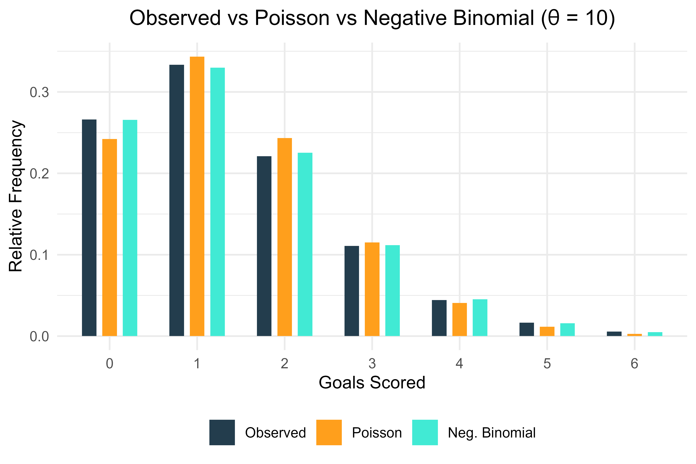
Not bad! We instantly see that this is a huge improvement over Poisson, and honestly does a pretty good job of fitting the actual observed scores. To demonstrate how increasing θ affects the negative binomial distribution, here is the same plot with θ = 10,000. It is now indistinguishable from the Poisson distribution:
So we’re done, right? Just use a negative binomial distribution with θ = 10 to model football scores. Not so simple, I’m afraid! That would be making an assumption that you can generate a score for team A, and then generate a score for team B, as if the two things happen independently. But is that a fair assumption?
Are Team Scores Independent?
To test that assumption we need to look at the conditional distribution of a team once we know how many goals their opponents have scored:
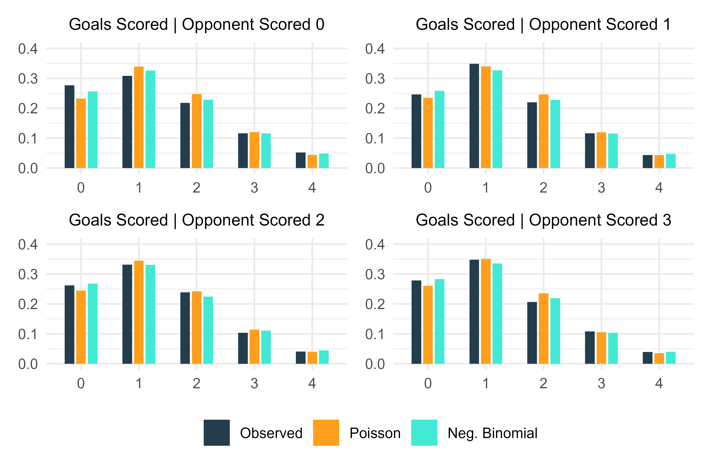
So now we can see there is a problem. When the opponent has scored 0, the distribution underestimates 0. When the opponent has scored 1, the distribution underestimates 1. When the opponent has scored 2, the distribution underestimates 2, and so on.
What this means is, in actual football, there are more draws than would be expected by generating two independent scores. This is not hard to explain: when a game is level, teams will take relatively fewer risks. When a team is trailing by one goal, they will throw men forward and make the game more open in pursuit of an equaliser. So the overall effect is that final scores are slightly more likely to be draws.
Accounting for Team Strength
We also have another problem that we haven’t addressed yet. We are generating scores for an aggregate of all teams in our dataset. But teams’ abilities can vary significantly! So we need an algorithm that gives us the mean and distribution for one team, based on the difference in the teams’ Elo ratings, and then the mean and distribution for the second team, based not only on the Elo ratings but also on the score of the first team!
The simplest way to approach this is by first generating the score of the favourite (i.e. the team with the higher Elo rating after home advantage has been applied). I fit this with a simple quadratic model of the difference in Elo ratings. Below we can see how this compares with the negative binomial with θ = 35. Remember, this is now an aggregation of different predictions across all of the games in the dataset.
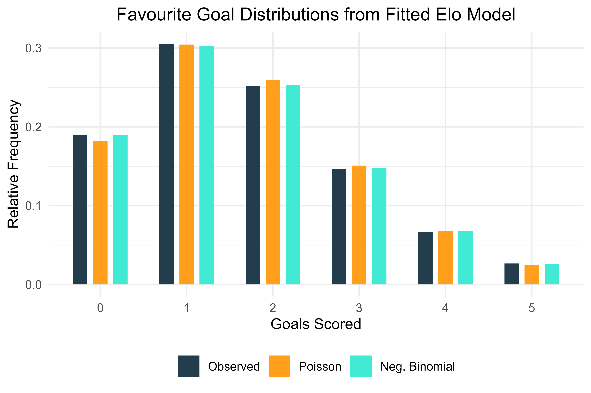
It’s a good fit. So the favourites at least seem to be sorted, and we can see that the negative binomial with θ = 35 is superior to Poisson.
But what about the underdog? It’s slightly more complex to fit the underdog’s mean goals scored because now we have to account for the number of goals scored by the favourite.
In addition, I added interaction terms to the quadratic model. What are interactions? A simple way to explain this is, if Real Madrid were playing against Tranmere Rovers and I told you Real Madrid scored 3 goals, would it change your prediction of how many Tranmere scored? Probably not. If I told you Tranmere scored 3? Clearly your estimates for Real Madrid scoring 3+ should increase. That is an interaction between two variables, because the first variable (number of goals scored by the opposition) has a different effect on the outcome depending on a second variable (quality of the opposition).
So let’s see how the underdog scores come out, conditional on the goals scored by the favourite:
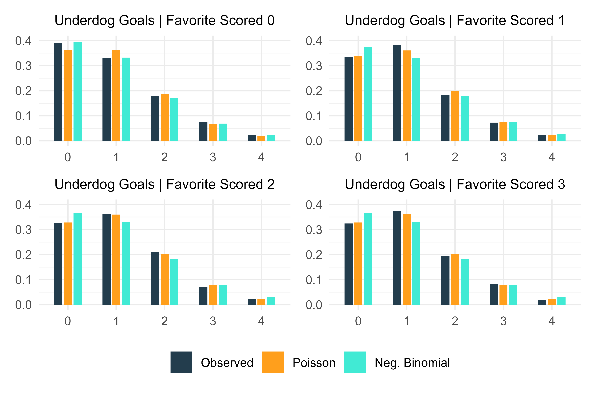
Clearly there is a problem. I tried a few different values of θ - the above plots are with θ = 5 because that’s a good fit when the favourite scores 0. But it’s a poor fit for the other scores. So what we probably need is a different θ depending on the favourite’s score!
I trained a function to find the optimal θ for each value of the favourite’s score, and these were the results:
Let’s see how the conditional plots look with these fitted dispersions:
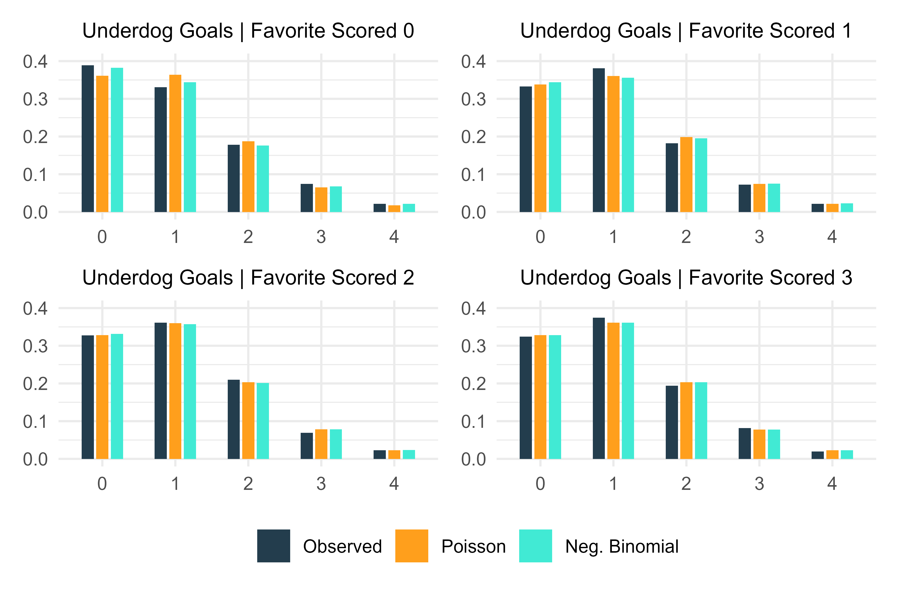
As Roy Walker would say: “It’s good, but it’s not the one.” So now it’s time to use some brute force. We know that the underdog’s score is more likely to match the favourite’s score, so let’s do exactly that.
Inflating Draw Probabilities
I repeated the last optimization, but this time with an extra parameter that inflates the probability of the underdog getting the same score as the favourite. All values were adjusted proportionally to ensure the total probability was still 1, of course. Here are the results:
| Opp_Goals | Dispersion | Inflation |
|---|---|---|
| 0 | 569 | 0.093 |
| 1 | 14 | 0.050 |
| 2 | 321 | 0.009 |
| 3 | 198 | 0.006 |
So when the favourite scores 0, there is a big boost to the probability of the underdog scoring 0. When the favourite scores 1, the effect reduces by almost half. For 2 or more goals, the inflation is minimal.
Now how does that look in the conditional distribution?
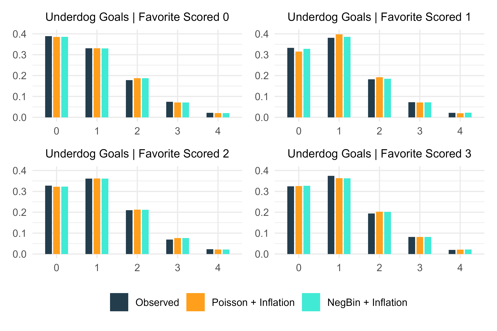
I’m pretty happy with that overall. The scores seem to track reality quite well, so we can now generate a probability of every scoreline (0-0, 2-1, 3-3, etc) for each game in the dataset and derive probabilities of win-draw-loss for each team. Let’s calibrate our model by comparing these probabilities with the actual results and scores:
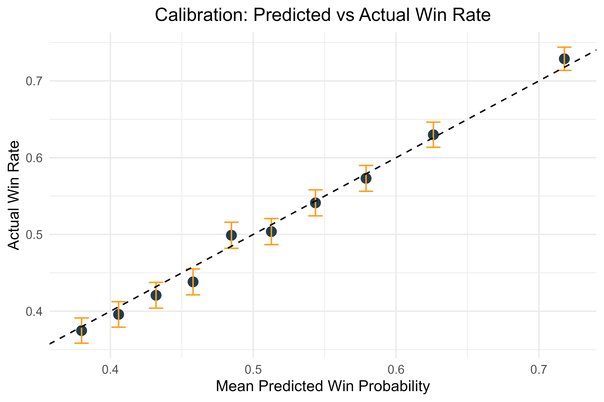
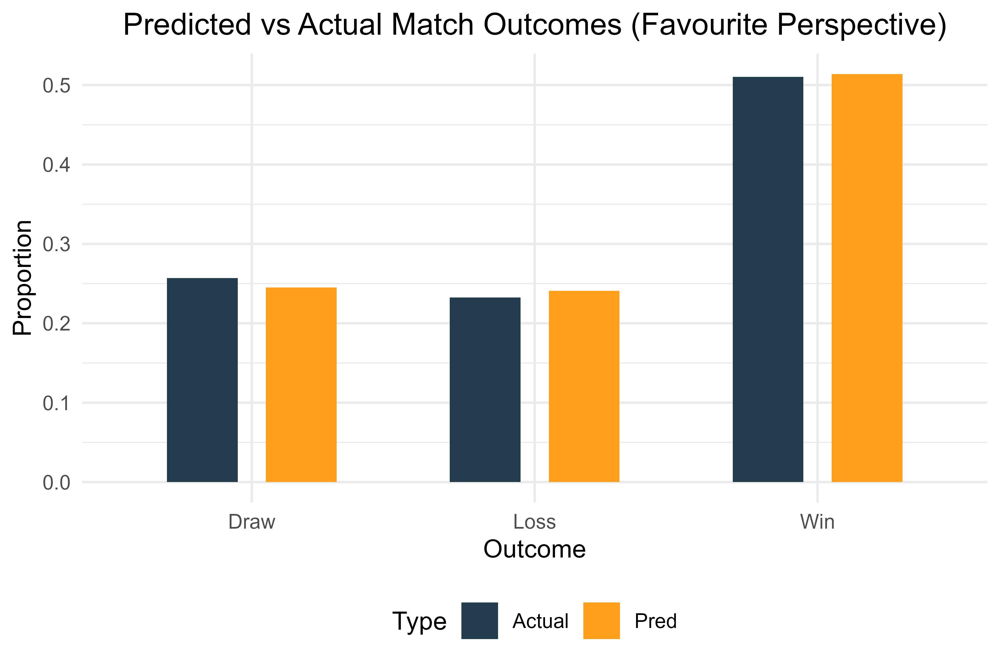
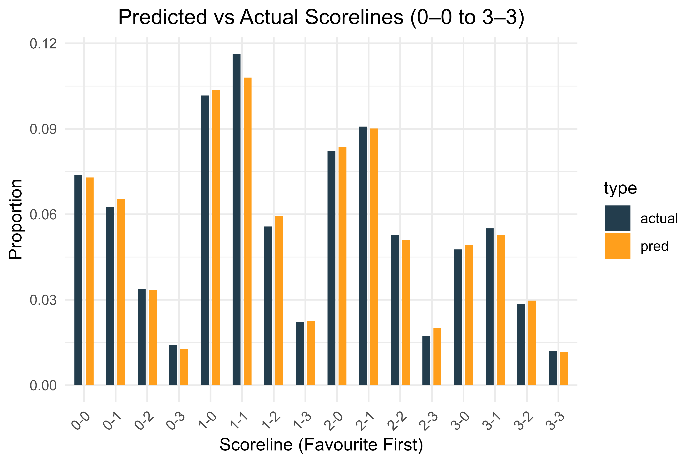
The deciles track pretty nicely as the dashed line falls inside all the error bars except one. Note that the probabilities are different to the earlier decile plot because that one was using “half wins” when a game was drawn, whereas this plot assumes a draw is not a win (i.e. it is 0, the same as a loss).
The W-D-L plot and correct scores plot are close; there just seems to be a stubborn difference in the 1-1 predictions for some reason. But for the task at hand, this should easily be adequate.
Summary
Via this process we have ended up with something similar to the Dixon-Coles model, which uses a Poisson distribution with inflated probabilities of low scores (0-0, 0-1, 1-1, 1-0).
By fitting scores conditionally and inflating the probability of draws, we have a system that can generate realistic match outcomes from Elo ratings alone. This forms a solid foundation for simulating league tables and other competitions, although for advanced analysis I would always advise users to be conscious of the GIGO problem.
Thanks for reading, and as I mentioned earlier, you can find all the code relating to this project at my GitHub repo.
© 2025 John Knight. All rights reserved.